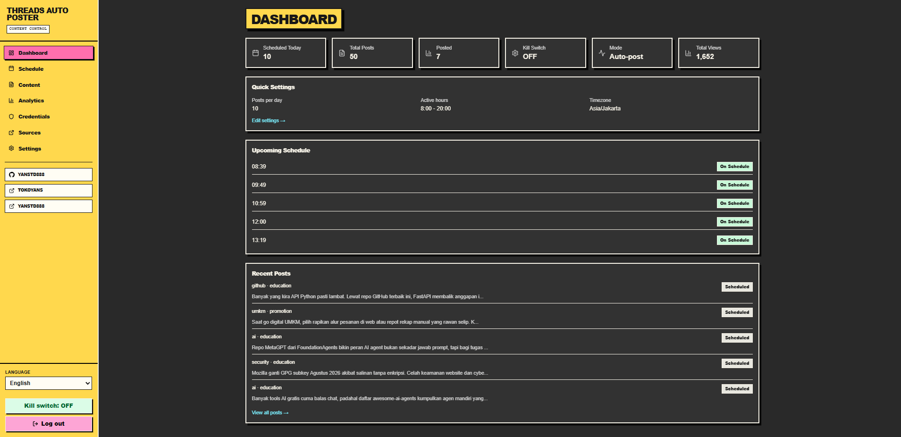

Pilih bukti
Select evidence
Gunakan sumber approved dan cooldown link agar topik tidak berulang.
Use approved sources and link cooldowns to avoid repeating the same material.
Riset dari sumber, draft berbantuan AI, review manusia, dan publikasi Threads—dalam satu workflow yang kamu kontrol sendiri.
Source-backed research, AI-assisted drafts, human review, and Threads publishing—inside one workflow you operate yourself.

Dashboard asli · screenshot tanpa data kredensial
Real dashboard · sanitized screenshot without credentials
Threads Auto Poster memisahkan riset, pembuatan draft, quality gate, persetujuan, dan publish agar kegagalan satu tahap tidak berubah menjadi posting ganda atau konten tanpa dasar.
Threads Auto Poster separates research, drafting, quality gates, approval, and publishing so one failed step does not become duplicate publishing or ungrounded content.
Gunakan sumber approved dan cooldown link agar topik tidak berulang.
Use approved sources and link cooldowns to avoid repeating the same material.
Agent menghasilkan draft berdasarkan strategy, sumber, dan batas format.
The agent drafts against strategy, source context, and format limits.
Quality gate memeriksa struktur, URL, panjang, duplikasi, dan aturan pillar.
The quality gate checks structure, URLs, length, duplication, and pillar rules.
Mode approval tersedia; status publish tidak pasti tidak pernah dipost ulang otomatis.
Approval mode is available; an uncertain publish is never retried automatically.
Sumber, health check, snapshot sementara, dan source cooldown membantu menjaga konteks konten tetap dapat ditelusuri.
Source health, temporary snapshots, and cooldowns keep content context traceable.
Atur tema, bahasa, policy sumber, promosi, struktur, CTA, dan format tanpa mengubah scheduler inti.
Set themes, language, source policy, promotion, structure, CTA, and format without rewriting the scheduler.
Draft gagal tetap disimpan sebagai bukti. Draft tidak dipaksa lolos hanya agar jadwal kosong.
Rejected drafts remain as evidence. Nothing is forced through just to clear a schedule.
Kegagalan persiapan yang retryable diproses ulang sampai jendela slot habis; publish tidak pasti dikarantina.
Retryable preparation errors run until the slot window ends; uncertain publishes are quarantined.
Konfigurasi, schedule, history, audit, dan source registry berjalan pada SQLite yang mudah dibackup.
Configuration, schedules, history, audit, and source registry run on backup-friendly SQLite.
Mulai dari review manual. Aktifkan auto-post hanya ketika workflow dan akun sudah siap.
Start with manual review. Enable auto-post only when the workflow and account are ready.
Repo ini ditujukan untuk operator yang membutuhkan kontrol atas source registry, jadwal, database, provider AI, dan kredensial Threads.
This repository is for operators who need control of the source registry, schedule, database, AI provider, and Threads credentials.
git clone https://github.com/yanstd888/threads-auto-poster.git cd threads-auto-poster cp .env.example .env npm install npm run build npm run start:4000
| Kebutuhan | Threads Auto Poster | Need | Threads Auto Poster |
|---|---|---|---|
| Kontrol data | SQLite di host sendiri | Data control | SQLite on your own host |
| Draft berbasis bukti | Source registry + context | Evidence-backed drafts | Source registry + context |
| Human review | Approval mode | Human review | Approval mode |
| Publish tak pasti | Tidak auto-retry | Uncertain publish | Never auto-retry |
Bangun ritme edukasi produk tanpa kehilangan approval akhir.
Build a product education rhythm without losing final approval.
Kelola source dan content pillar yang berbeda secara terstruktur.
Operate distinct source pools and content pillars in a structured way.
Gunakan research trail, audit log, dan fallback aman untuk konten yang dapat dipertanggungjawabkan.
Use research trails, audit logs, and safe fallbacks for accountable content.
Tidak. Ini project self-hosted. Kamu menjalankan aplikasi, database, dan konfigurasi di infrastruktur sendiri.
No. This is a self-hosted project. You run the app, database, and configuration on your own infrastructure.
Ya. Gunakan approval mode untuk menyimpan draft dan melakukan review sebelum publish.
Yes. Use approval mode to save drafts and review them before publishing.
Tidak. GitHub Pages hanya menjadi situs pengenalan statis. Scheduler berjalan pada instalasi self-hosted.
No. GitHub Pages is a static introduction site. The scheduler runs on a self-hosted installation.
Baca CONTRIBUTING, buka issue yang relevan, lalu kirim PR kecil dengan bukti test yang sesuai.
Read CONTRIBUTING, open a relevant issue, then submit a small PR with appropriate test evidence.